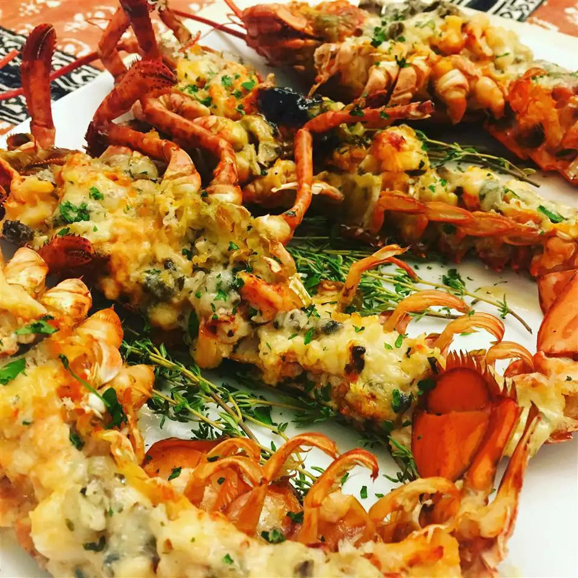

Lobster Thermidor

Description
This stunning lobster thermidor is surprisingly simple to make.
Lobster shells are stuffed with cooked lobster in a creamy white wine sauce, then topped with parmesan cheese and broiled until golden.
Ingredients
- 1 medium (1 & 1/2 pound) cooked lobster
- 2 tablespoons butter
- 1 shallot, finely chopped
- 1 & 1/2 cups fresh fish stock
- 1/4 cup white wine
- 1/4 cup double cream
- 1/2 teaspoon hot English mustard
- 2 tablespoons chopped fresh parsley
- 1 tablespoon fresh lemon juice
- salt and freshly ground black pepper to taste
- 1/4 cup freshly grated Parmesan cheese
How to make: Lobster Thermidor (in steps)
- Cut lobster in half lengthwise, and remove any meat from the claws, tail, and head. Cut meat into pieces and place back into the shells.
- Melt butter in a large skillet over medium heat. Add shallot; cook and stir until tender. Mix in fish stock, white wine, and double cream.
Bring to a boil, and cook until reduced by half. Mix in parsley, lemon juice, mustard, salt, and pepper
- Preheat your oven's broiler.
- Place stuffed lobster halves on a broiling pan or baking sheet. Spoon sauce over the meat and sprinkle with Parmesan cheese.
- Broil in the preheated oven until just golden brown, 3 to 4 minutes. Serve immediately.